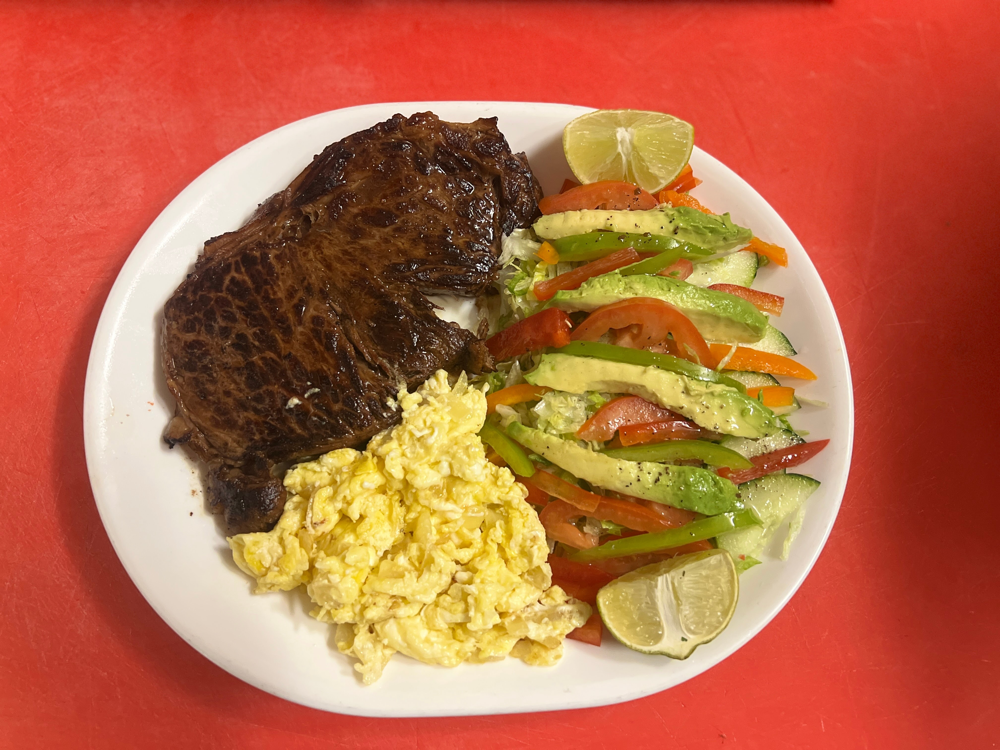
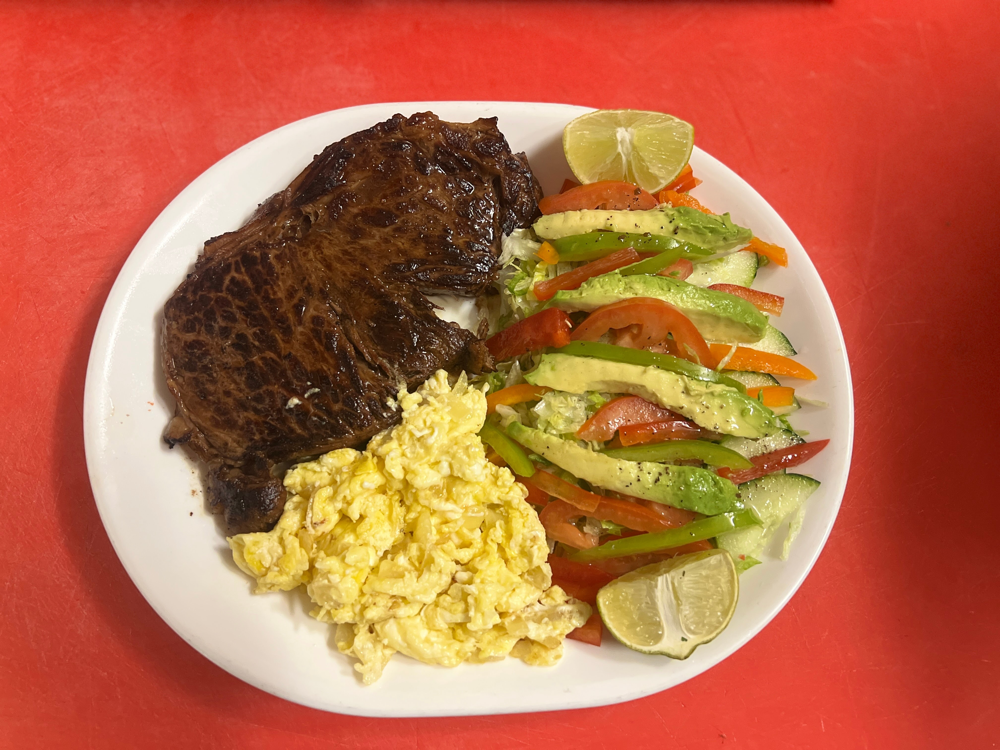
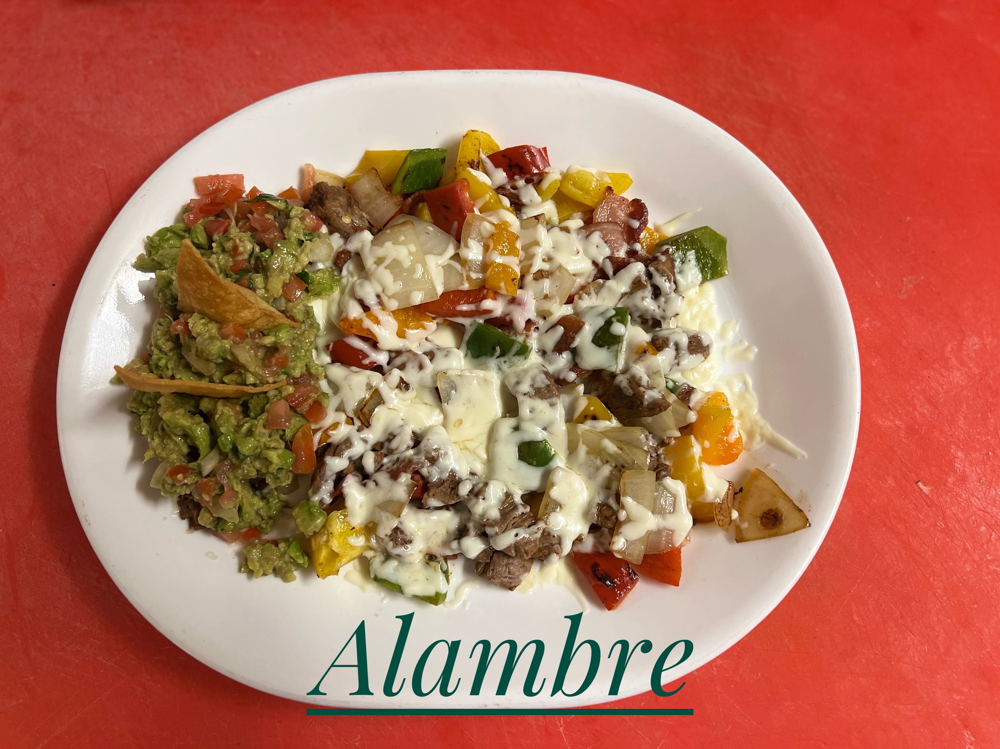
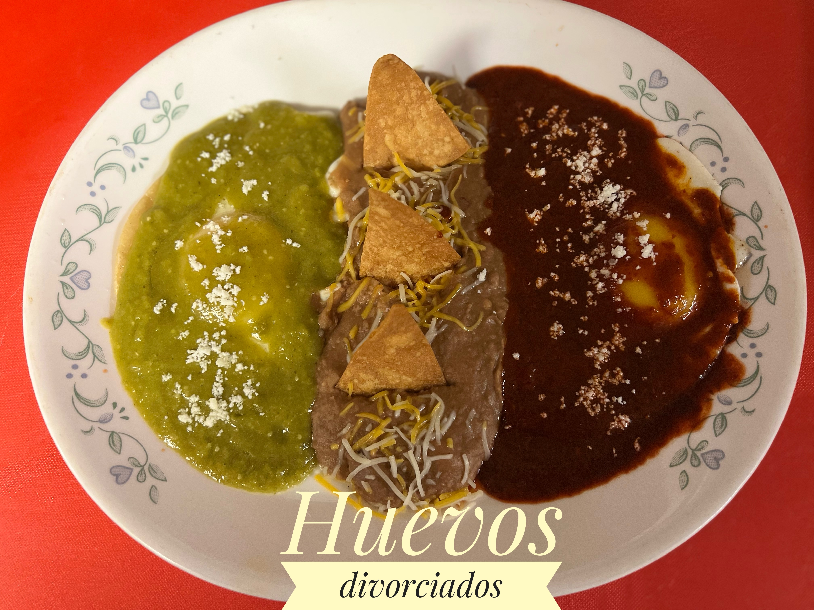
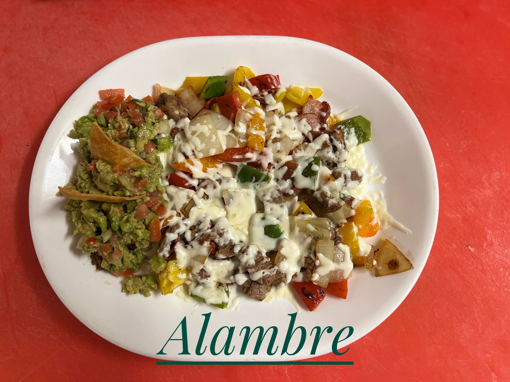
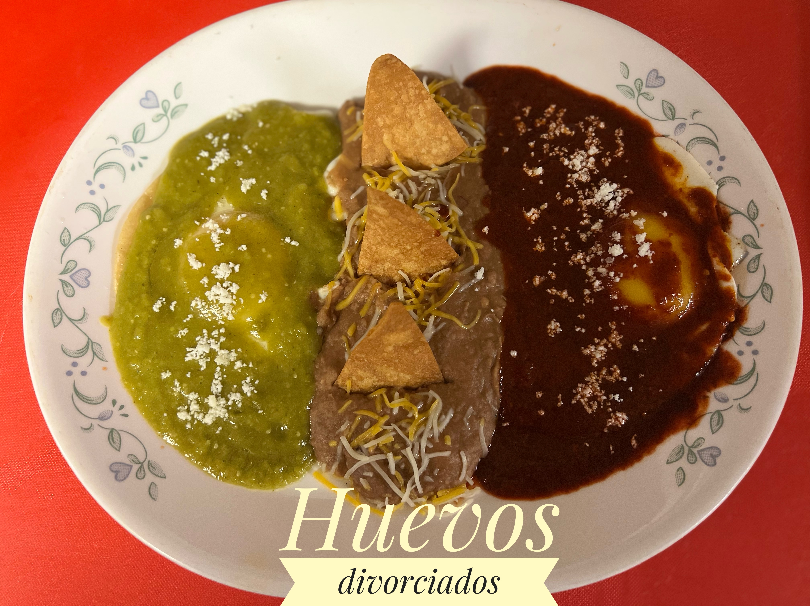
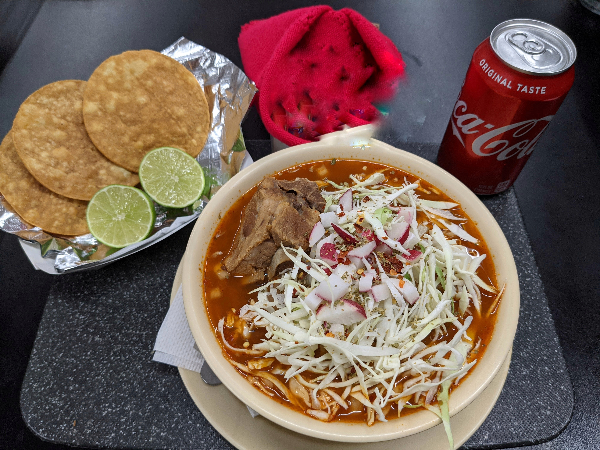
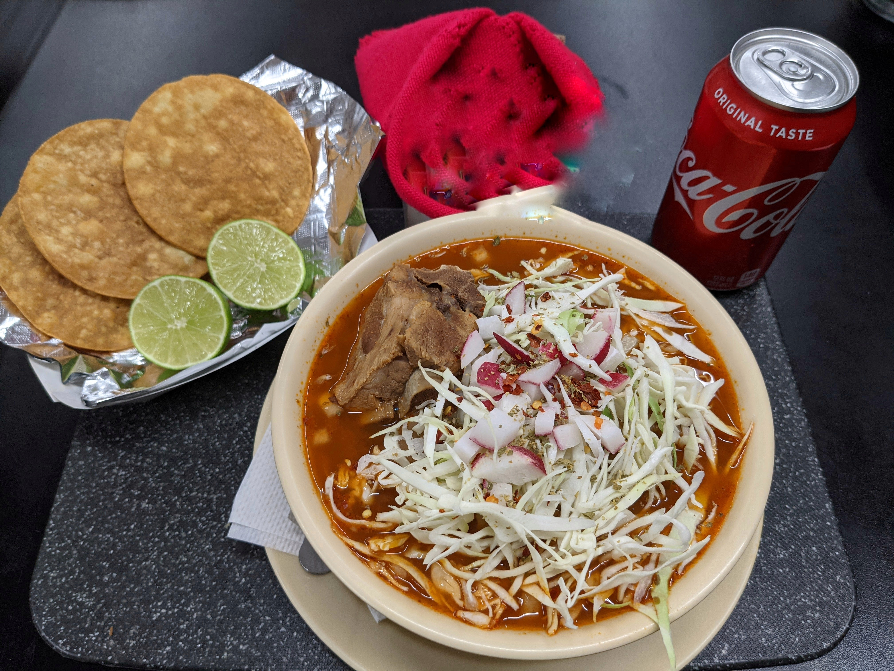

La
Guadalupana
Descrubre sobre la Guadalupana
En 2014 abrio sus puertas por primera vez en la ciudad de Odessa Texas el Restaurante La Guadalupana, ofreciendo un poco mas de gastronomía mexicana en la ciudad,nos ubicamos en una de las principales calles de la Cuidad de Odessa. Nuestra cocina comprende desde recetas tradicionales de la cocina Mexicana como otras de elaboración propia, siempre buscando la mejor satisfaccion del cliente, siendo reconocidos por nuestros clientes por el amable servicio y nuestros deliciosos platillos. Situados a unos pasos de la Via Interestatal 20, para todos aquellos que quieran degustar estos exquisitos sabores y sentirte como en casa, La Gudalupana es su lugar.
In 2014, La Guadalupana Restaurant opened its doors for the first time in the city of Odessa Texas, offering a little more Mexican cuisine in the city. Located on one of the main streets of the City of Odessa. Our cuisine ranges from traditional Mexican cuisine recipes to others prepared in-house, always seeking the best customer satisfaction, being recognized by our clients for the friendly service and our delicious Mexican food. Located a few steps from Interstate 20, for all those who want to taste these exquisite flavors and feel at home, La Gudalupana is your place.
 

 
 
